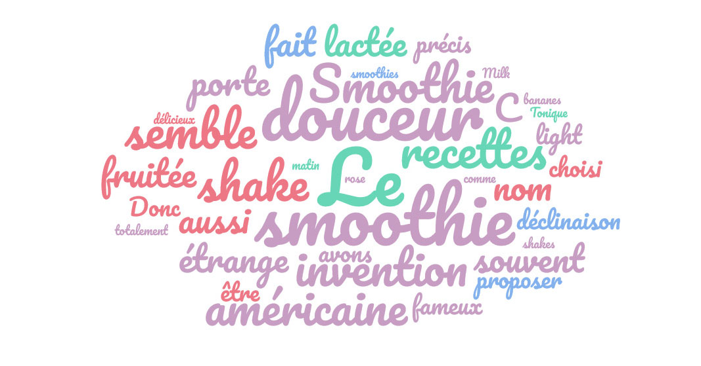

Il faut : 2 cuillères à soupe d’açai en poudre, ½ cuillère à café de fruit de la passion, le kiwi, la mangue, l’orange, le pamplemousse…), 2 cuillères à soupe d’éclats de fèves de cacao.
Préparer la recette : dans votre blender Philips, mettez l’açai, les bananes épluchées, les autres fruits sélectionnés, la cannelle et 6 cl de jus de pomme. Mixez le tout et incorporez si besoin, le reste du jus de pomme pour obtenir une texture crémeuse, pas trop liquide.
Il faut : 1 banane, 1 cuillère à soupe de beurre de cacahuètes, 15 à 20cl de lait d’amande, 4 glaçons, 2 cuillères à soupe d’éclats de fèves de cacao, 400g de framboises, 200g de myrtilles
Préparer la recette : pelez la banane que vous couperez en rondelles. Mettez les glaçons dans le blender et mixez pour obtenir une mixture effet « glace pilée ». Ajoutez le reste des ingrédients et mélangez le tout. L’en-cas parfait pour vous et vos enfants.
Il faut : 400g de framboises, 200g de myrtilles, 6 glaçons, , 2 cuillères à soupe d’éclats de fèves de cacao400g de framboises, 200g de myrtilles, 400g de framboises, 200g de myrtilles.
Préparer la recette : Lavez et séchez les framboises et les myrtilles. Incorporez dans votre blender en ajoutant les glaçons et mixez ! Dégustez cette texture mousseuse et revitalisante avant votre run du soir ! L’en-cas parfait pour vous et vos enfants. Les framboises et les myrtilles